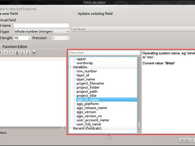
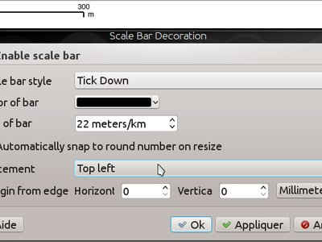
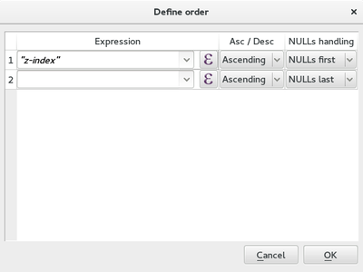
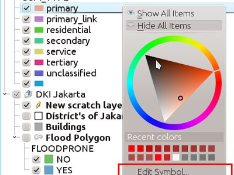

Registro de cambios para QGIS 2.14¶

This is the changelog for the next release of QGIS - version 2.14 “Essen”. Essen was the host city to our developer meet ups in October 2012 and 2014.
Lanzamiento de Largo Plazo
This is a special release since it is designated an “LTR” (Long Term Release). LTR releases will be supported with backported bug fixes for one year, and will be in permanent feature freeze (i.e. no new features will be added, only bug fixes and trivial updates). Note that we are in discussion to extend the term of our LTR releases to two years, but for technical reasons we will not do this until QGIS 3.2.
The purpose of LTR releases is to provide a stable and less frequently changing platform for enterprises and organizations that do not want to deal with updating user skills, training materials etc. more than once per year. The success of the LTR is very much down to you, our beloved users - we need your support to help funding bug fixes and making sure in your support contracts with support providers specify that any bug fixes done on your behalf are applied to the LTR branch as well as our normal development branch.
If an LTR is important to you, please consider also directly supporting the QGIS project, or encourage your commercial provider to use LTR as a basis for your enterprise solution so that everyone may benefit from a stable platform that is being continuously improved and refined. Note that for users and organizations that like to live on the frontier, our regular four-monthly releases will continue unabated.
Nuevas Características en QGIS 2.14 “Essen”
If you are upgrading from QGIS 2.8 (our previous LTR version) you will find a great many new features in this release. We encourage you to peruse the changelogs for the intermediate non LTR 2.10 and 2.12 releases as this QGIS 2.14 includes all features published in those releases too. Note that 2.14 first enters the regular package repositories and will not immediately replace 2.8 in the LTR package repositories. That will happen when 2.16 is released.
Cada vez que se agregan nuevas características a un software se introduce la posibilidad de nuevos fallos - si encontrara algún problema con este lanzamiento, por favor cree un boleto en el Rastreador de Fallos QGIS.
Gracias
We would like to thank the developers, documenters, testers and all the many folks out there who volunteer their time and effort (or fund people to do so). From the QGIS community we hope you enjoy this release! If you wish to donate time, money or otherwise get involved in making QGIS more awesome, please wander along to qgis.org and lend a hand!
QGIS is supported by donors and sponsors. A current list of donors who have made financial contributions large and small to the project can be seen on our donors list. If you would like to become an official project sponsor, please visit our sponsorship page for details. Sponsoring QGIS helps us to fund our six-monthly developer meetings, maintain project infrastructure and fund bug fixing efforts. A complete list of current sponsors is provided below - our very great thank you to all of our sponsors!
QGIS is Free software and you are under no obligation to pay anything to
use it - in fact we want to encourage people far and wide to use it
regardless of what your financial or social status is - we believe
empowering people with spatial decision making tools will result in a
better society for all of humanity. If you are able to support QGIS, you
can 
- Patrocinadores QGIS actuales
- General
- Característica: Cambiado comportamiento de función strpos
- Característica: Acercamiento a elemento con click-derecho en tabla de atributos
- Característica: Mejoras en velocidad y memoria
- Característica: Más variables de expresión
- Característica: Mejor control sobre la ubicación de elementos de mapa
- Característica: Programa pagado de arrego de fallos
- Característica: Calculadora de campo puede ser usada para actualizar la geometría de elemento
- Característica: Nuevas funciones de expresión en 2.14
- Herramientas de análisis
- Navegador
- Proveedores de datos
- Característica: Capacidades caché WMS
- Característica: Expandido soporte de geometría curveada
- Característica: Mejor manejo de campos hora y fechahora
- Característica: Soport Z/M en proveedor de texto delimitado
- Característica: Grupos de transacción para edición postgres
- Característica: Autentificación PKI para proveedor Postgres
- Característica: Capas virtuales
- Característica: Más extensiones de archivo para selectores de archivo de proveedores GDAL y OGR
- Feature: Use ST_RemoveRepeatedPoints for server-side simplification with PostGIS 2.2 (or newer) layers
- Gestión de datos
- Característica: Eliminación del complemento SPIT
- Característica: exportar DXF: opción para usar título en vez de nombre como nombre de capa DXF en la aplicación y servidor
- Característica: El tipo de geometría puede ser redefinida en el diálogo de guardar vector
- Feature: Vector joins are now saved within QLR layer-definition-files
- Característica: Widget de Recurso Externo
- Característica: Edición de relación N:M
- Digitalizando
- Etiquetado
- Feature: «Cartographic» placement mode for point labels
- Característica: Aplicar distancia de etiqueta a partir del borde del símbolo
- Característica: Control sobre el orden de representación de etiqueta
- Característica: El símbolo reproducido actual es ahora considerado un obstáculo para las etiquetas de elementos punto
- Leyenda de Capa
- Diseñador de Mapas
- Complementos
- Procesando
- Característica: Nuevos algoritmos en 2.14
- Característica: Pruebas S/C de Unidad
- Característica: Caja de herramientas mejorada
- Feature: Batch processes can be saved and later recovered from the batch processing interface
- Característica: Diálogo de algoritmo más informativo
- Característica: módulos v.net GRASS7
- Programabilidad
- Característica: Rediseño del editor de función de expresión
- Característica: Almacenar el código init de python en el proyecto
- Característica: Nuevas opciones de filtrado y ordenado para QgsFeatureRequest
- Feature: Custom feature form Python code options
- Característica: Nuevas clases PyQGIS en 2.14
- Nuevas clases núcleo
- Nuevas clases IGU
- Servidor QGIS
- Característica: parámetro STARTINDEX en Pedido WFS GetFeature
- Característica: showFeatureCount en GetLegendGraphic
- Feature: Option to avoid rendering artefacts at edges of tiles
- Característica: Revisor de configuración en propiedades del proyecto
- Característica: Capacidades WMS INSPIRE
- Característica: Adiciona nombre corto a capas, grupos y proyecto
- Simbología
- Feature: Size assistant for varying line width
- Característica: Soporte de transparencia en parámetros de color SVG
- Característica: Duplicación fácil de capas de símbolo
- Característica: Representador 2,5D
- Característica: Permite la definición del orden de representación para los elementos
- Feature: Geometry generator symbols
- Ejemplos
- Interfaz de usuario
Patrocinadores QGIS actuales¶
  Oficina de Obras Públicas, Irlanda, Irlanda (12.2014-12.2016) Oficina de Obras Públicas, Irlanda, Irlanda (12.2014-12.2016) |
 GAIA mbH, Alemania (11.2015-11.2016) GAIA mbH, Alemania (11.2015-11.2016) |
 Sourcepole AG, Suiza (10.2014-10.2016) Sourcepole AG, Suiza (10.2014-10.2016) |
 AGH University of Science and Technology, Polonia (06.2015-06.2016) AGH University of Science and Technology, Polonia (06.2015-06.2016) |
 Estado de Vorarlberg, Austria (03.2013-05.2016) Estado de Vorarlberg, Austria (03.2013-05.2016) |
|
Asociación Geoinnova, España (03.2016-03-2017) |
Gis3W, Italia (01.2014-01.2017) |
GKG Kassel,(Dr.-Ing. Claas Leiner), Alemania (03.2014-03.2017) |
CawdorForestry Resource Management, Escocia (02.2016-02.2017) |
ChameleonJohn, EEUU (02.2016-02.2017) |
2D3D.GIS, Francia (12.2015-12.2016) |
|
Dr. Kerth + Lampe Geo-Infometric GmbH, Alemania (12.2015-12.2016) |
MappingGIS, España (11.2015-11.2016) |
HostingFacts.com, Estonia (12.2015-12.2016) |
Urbsol, Australia (11.2014-11.2016) |
Lutra Consulting, Reino Unido (10.2015-10.2016) |
WhereGroup GmbH & Co. KG, Alemania (08.2015-08.2016) |
Nicholas Pearson Associates, Reino Unido (07.2015-07.2016) |
QGIS Polska, Polonia (07.2015-07.2016) |
www.terrelogiche.com, Italy (06.2015-06.2016) |
www.geosynergy.com.au, Australia (05.2012-05.2013+06.2015-06-2016) |
Gaia3D, Inc., Corea del Sur (05.2015-05.2016) |
Royal Borough of Windsor and Maidenhead, Reino Unido (04.2015-04.2016) |
Chartwell Consultants Ltd., Canadá (03.2015-03.2016) |
Trage Wegen vzw, Bélgica (03.2015-03.2016) |
GFI - Gesellschaft für Informationstechnologie mbH, Alemania (03.2015-03.2016) |
GIS-Support, Polonia (02.2015-02.2016) |
ADLARES GmbH, Alemania (01.2015-01.2016) |
www.molitec.it, Italia (01.2014-01.2016) |
www.argusoft.de, Alemania (06.2012-06.2013 + 12.2013-12.2015) |
Customer Analytics, EEUU (12.2014-12.2015) |


General¶
Característica: Cambiado comportamiento de función strpos¶
The strpos function behaviour has been altered, so that no match now results in a «0» value and a non-zero value means a match at the specified character position. In older QGIS versions, a «-1» value would mean no-match and other return values represented the character position - 1.
Project files from earlier QGIS versions will need to be updated to reflect this change.

Esta característica fue desarrollada por Jürgen Fischer
Característica: Acercamiento a elemento con click-derecho en tabla de atributos¶
Ahora puede acercarse a cualquier elemento dentro de la tabla de atributos (sin tener que seleccionarlo primero) haciendo click derecho y seleccionado acercar a elemento.

Característica: Mejoras en velocidad y memoria¶
- Guardando un conjunto de los elementos seleccionados de una capa grande ahora es mucho más rápido
- Ahora es más rápida la actualización sólo en elementos seleccionados usando la calculadora de campo
- Acercamiento más rápido a seleccionado en capas grandes
- Much faster
get_featureexpression function (especially when an indexed column in the referenced layer is used) SelectByAttributeandExtractByAttributeprocessing algorithms are orders of magnitude faster, and can take advantage of database indices created on an attribute- el algoritmo de procesamiento
PointsInPolygones significativamente más rápido - Filtering the categories in a categorised renderer (eg, only showing some categories and unchecking others) is much faster, as now only the matching features are fetched from the data provider
- Significativa reducción en memoria requerida para la apertura de capas vector grandes
Característica: Más variables de expresión¶
Durante la representación, estarán disponibles nuevas variables:
@geometry_part_count: The part count of the currently rendered geometry (interesting for multi-part features)@geometry_part_num: 1-based index of the currently rendered geometry part
Estos son útil para aplicar estilos diferentes a partes diferentes de elementos multiparte:
@map_extent_width: La anchura del mapa actualmente representado en unidades de mapa@map_extent_height: La altura del mapa actualmente representado en unidades de mapa@map_extent_center: El punto centro del mapa actualmente representado en unidades de mapa
También se han agregado variables relacionadas con el ambiente del sistema operativo:
@qgis_nombre_so: ej. “Linux”,”Windows” o “OSX”@qgis_platforma: ej. “Escritorio” o “Servidor”@usuario_nombre_cuenta: nombre de cuenta en el sistema operativo para el usario actual@user_full_name: nombre actual del usuario de la cuenta del sistema operativo (si está disponible)

Esta característica fue financiada por Andreas Neumann (el SO y las variables relacionadas con usuario)
Esta característica fue desarrollada por Nyall Dawson, Matthias Kuhn
Característica: Mejor control sobre la ubicación de elementos de mapa¶
QGIS 2.14 has gained finer control over the placement of north arrows, scale bars and copyright notices on the main map canvas. You can now precisely set the position of these elements using a variety of units (including millimeters, pixels and percent).

Característica: Programa pagado de arrego de fallos¶
Prior to each release, we hold a paid bugfixing programme where we fund developers to clean up as many bugs as possible. We have decided to start including a report back on the paid bugfixing programme as part of our changelog report. Note that this list is not exhaustive.
- Sandro Santilli: Conexión Postgis se congela si presiona «Set filter» durante la carga de datos
- Sandro Santilli: db_manager no es capaz de cargar rásters desde conexiones sin dbname especificado
- Sandro Santilli: Capas del complemento no trabajan correctamente con rotación
- Sandro Santilli: Crash in QgsGeomColumnTypeThread stopping connection scan #14140 #13806
- Sandro Santilli: Se cae después de cambios en masa de valores de atributos en archivo shape
- Sandro Santilli: KMZ causa que la aplicación QGIS se caiga (Mac)
- Sandro Santilli: QGIS 2.8.1 cae cuando se abre FileGDB (openGDB-Driver)
- Sandro Santilli: QGIS cae cuando se elimina un vértice de una geometría multiparte
- Sandro Santilli: test -V -R qgis_analyzertest segfaults
- Sandro Santilli: output/bin/qgis_diagramtest segfaults
- Sandro Santilli: Overflow on primary key with negative values; crashes QGIS when editing #13958 #14262
- Sandro Santilli: Prueba PyQgsPostgresProvider se cuelga en ausencia de una base de datos de prueba
- Sandro Santilli: TestVectorLayerJoinBuffer hangs if database is not available
- Nyall Dawson: BLOCKER: Crash when opening layer properties dialog for geometryless vector layer
- Nyall Dawson: Broken server side filtering for OGR, Oracle and Spatialite layers
- Nyall Dawson: BLOCKER: Mala digitalizacion de polígono en maestro
- Nyall Dawson: BLOCKER: Heatmap with expression triggers segfault
- Nyall Dawson: BLOCKER: unchecking one sub-layer of a categorized symbology leads to no features being drawn
- Nyall Dawson: ALTO: No se puede mostrar una imagen Multibanda (ej. landsat5,7,8) in Windows8
- Nyall Dawson: BLOCKER: CurvePolygons no se dibuja
- Nyall Dawson: BLOCKER: «Merge Attributes» tool doesn’t change values when they are typed
- Nyall Dawson: HIGH: Filter legend by content is broken when renderer contains duplicate symbols
- Nyall Dawson: Fix issues with conversion of renderers to rule based renderer resulting in broken renderer
- Nyall Dawson: Fix categorised renderer does not store changes to the source symbol
- Nyall Dawson: HIGH: Avoid crash with raster calculator and huge raster inputs
- Nyall Dawson: HIGH: @value variable of simple symbol fill color wrongly gets modified in data-defined expression
- Nyall Dawson: HIGH: Editing Composer legend while filtered does not work
- Nyall Dawson: NORMAL: Borrado de nodos - comportamiento inconsistente
- Nyall Dawson: Arreglar manejo de valores de tiempo en atributos
- Nyall Dawson: arreglos en orden de pestañas de Diálogo
- Nyall Dawson: BLOCKER: cae cuando se adicional múltiples archivos desde panel navegador
- Nyall Dawson: HIGH: Merge selected features tool corrupts data when columns are defined as «hidden»
- Nyall Dawson: Correctly handle LongLong fields in merge attribute dialog
- Nyall Dawson: Fix misleading display of calculation details in measure tool dialog (was misleading and inaccurate for many CRS/unit combinations)
- Nyall Dawson: NORMAL: max value for option «increase size of small diagrams» not sufficient
- Nyall Dawson: BLOCKER: Area not calculated correctly with OTF on
- Nyall Dawson: NORMAL: Incoherent lat/lon coordinates in a projected coordinate system project
- Nyall Dawson: NORMAL: make the field calculator compute areas and lengths in units other than map units #12939 #2402 #4857
- Nyall Dawson: NORMAL: herramientas internas diferentes calculan áreas inconsistentes de polígonos
- Nyall Dawson: NORMAL: In virtual fields $area function computes always values using «None/planimetric» ellipsoid
- Martin Dobias: capa ráster dibujada como basura
- Martin Dobias: HIGH: Multi-threaded rendering and OTF reprojection issues #11441 #11746
- Martin Dobias: BLOCKER: Regression in «save as» dialog for shapefiles
- Martin Dobias: Carga lenta de tabla de atributos en modo depuración
- Martin Dobias: BLOCKER: Cae cuando se cambia tipo de representador
- Martin Dobias: HIGH: Problemas #1 con representador python personalizado
- Martin Dobias: ALTO: Problemas #2 en visualizador python personalizado
- Martin Dobias: arreglos visualizador 2.5d
- Martin Dobias: ALTO: Congelamiento largo cuando se inicializa ajuste
- Martin Dobias: NORMAL: Carga de datos-definido desde xml
- Martin Dobias: Gerente fijo de BD para trabajar con SpatiaLite < 4.2
- Martin Dobias: NORMAL: Caída mientras se reproduce en modo de depuración
- Martin Dobias: BLOCKER: Fix selection / identification in spatialite views #14232 #14233
- Martin Dobias: BLOQUEADOR: Corregir arrastre&suelte de tablas spatialite
- Jürgen Fischer:Acercamiento a la capa funciona incorrectamente mientras se edita la capa
- Jürgen Fischer:Proceso de visualizador de ayuda ejecutándose en segundo plano mientras no está abierto el visualizador de ayuda (o incluso QGIS)
- Jürgen Fischer:Spatialindex incluye ruta faltante en algunos componentes
- Jürgen Fischer:fallo en compilación intentando generar qgsversion.h
- Jürgen Fischer:Configuración de widget de edición es almacenado dos veces
- Jürgen Fischer:Espacio extra en operador «IS NOT» operator hace que la expresión regrese una selección equivocada
- Jürgen Fischer:QGIS greadily allocates memory and crashes when editing moderately large shapefiles with the node tool
- Jürgen Fischer:Reproyección francesa usa ntf_r93.gsb (IGNF:LAMBE etc ..)
- Jürgen Fischer:Digitizing: «Reuse last entered attribute values» should not overwrite primary key column
- Jürgen Fischer:Problemas en descripción de expresión Case
- Jürgen Fischer:escritor vector de archivo shapefile: el campo fechahora guardado como fecha resulta en la pérdida de dato de la hora
- Jürgen Fischer:Adicionar ayuda par algunas funciones de variable
- Jürgen Fischer:Capas virtuales no funcionan en Procesamiento
- Jürgen Fischer:error en carga de archivo de definición de capa
- Jürgen Fischer:QgsGeometry::fromWkb falla si WKB tiene representación endian diferente
- Jürgen Fischer:Falla en construcción Debian.
- Jürgen Fischer:Prueba PyQgsPostgresProvider se cuelga en ausencia de base de datos de prueba
- Jürgen Fischer:acceso wkb fuera de límites
- Jürgen Fischer:QGIS bajo WIndows invierte el eje Y en la importación netCDF, no en Linux OSGeo4W #483
- Jürgen Fischer:OSGEO4W: Ejecución fuera de línea de instalación hace caer el instalador
- Jürgen Fischer:OSGEO4W: Dependencias no están rastreando en Windows Server 2003 x64
- Jürgen Fischer:OSGEO4W: instalación de un paquete local no revisa las dependencias
- Jürgen Fischer:OSGEO4W: Setup starts downloading and installing packages before showing you a list to choose from
- Jürgen Fischer:OSGEO4W: Using -a for Advanced selects two options (command line install)
- Jürgen Fischer:OSGEO4W: Descarga infinita de licencia durante la instalación quieta de szip
- Jürgen Fischer: atasco en proveedor Oracle
- Jürgen Fischer: arreglar definición de ruta para Saga
Característica: Calculadora de campo puede ser usada para actualizar la geometría de elemento¶
The field calculator can now be used to update feature geometries using the result of a geometric expression. This is a handy shortcut to do operations such as apply a buffer to a group of selected features, and together with all the newly added geometry functions in 2.14 makes for a very handy way to manipulate your geometries!

Esta característica fue desarrollada por Nyall Dawson
Característica: Nuevas funciones de expresión en 2.14¶
Se han agregado muchas nuevas expresiones para la versión 2.14:
relate: performs a DE-9IM geometry relation by either returning the DE-9IM representation of the relationship between two geometries, or by testing whether the DE-9IM relationship matches a specified pattern.- la función
make_pointahora acepta valores z y m opcionales, y se ha agregado una nueva funciónmake_point_mpara crear geometrías PointM. - funciones
myzpara recuperar los valores m y z de una geometría punto - nuevas funciones
make_lineymake_polygon, para crear geometrías línea y polígono a partir de un conjunto de puntos reverse, para volver al revés cadenaslíneasevalfunction, which can evaluate a string as though it is an expression of its owntranslatefunction, for translating geometries by an x/y offsetdarkerandlighterfunctions, which take a color argument and make it darker or lighter by a specified amountradiansydegrees: para convertir ángulos entre radianes y gradospoint_on_surface: devuelve un punto sobre la superficie de una geometríaexterior_ring: devuelve el anillo exterior para una geometría polígonois_closed: devuelve verdadero si una cadenalínea está cerrada- new geometry accessor functions:
geometry_n(returns a specific geometry from within a collection),interior_ring_n(returns an interior ring from within a polygon) num_geometries: devuelve el número de geometrías dentro de una colecciónnum_rings: devuelve el número de anillos en un objeto de geometría polígononum_interior_rings: devuelve el número de anillos interiores en un polígononodes_to_points, para convertir cada nodo en una geometría a una geometría multipuntosegments_to_lines, para convertir cada segmento en una geometría a una geometría multilíneaclosest_point: returns closest point in a geometry to a second geometryshortest_line: devuelve le línea posible más corta para unir dos geometrías
nodes_to_points and segments_to_lines are intended for use with
geometry generator symbology, eg to allow use of m and z values for
nodes/lines with data defined symbology.
Otras mejoras:
- geometries and features can now be used in conditional functions. For
instance, this allows expressions like
case when $geometry then ... else ...andcase when get_feature(...) then ... else ...

Herramientas de análisis¶
Característica: Más estadísticas están disponibles en la herramienta fusionar atributos¶
When using either the merge attribute values or merge features tool, there are additional summary statistics available which can be used to set the resultant attribute values. These include Q1, Q3, inter-quartile ranges, majority and minority values, and number of unique values, amongst others.

Esta característica fue desarrollada por Nyall Dawson
Característica: valores z/m son mostrados cuando se usa la herramienta identificar¶
The identify tool is now able to show any z or m value present in the identified features. If the feature is a line or polygon, the tool will show the vertex number and x/y/z/m for the nearest vertex to the identified point. The identify tool now also shows the number of parts and part number for collections.

Esta característica fue desarrollada por Nyall Dawson
Característica: Manejo unificado de unidades de distancia y área y formatos de coordenada¶
In QGIS 2.14 the handling of various options regarding distance units, area units and coordinate display have been unified, simplified, and moved to Project Properties. This change brings numerous benefits, including:
- The coordinate format specified in Project Properties is consistently used whenever a coordinate is displayed to the user, including the identify tool results and the status bar display.
- The setting for distance and area units in Project Properties is
respected for all distance and area calculations, including the
measure tool, identify results, and use of the
$area,$lengthand$perimeterfunctions. - Additional area units have been added, including square yards, acres, hectares and more.
- Se han agregado unidades angulares adicionales a la herramienta de medición de ángulo, incluyendo rotaciones, minutos de arco y segundos de arco.
- Ahora es posible mostrar las coordenadas en latitud y longitud en la barra de estado aún cuando use un SCR proyectado.

Esta característica fue financiada por el programa de corrección de fallos patrocinado por QGIS
Esta característica fue desarrollada por Nyall Dawson
Navegador¶
Característica: Mejoras al Navegador¶
The QGIS Browser is a filesystem, OGC Web Services and Database Connection panel that lets you easily drag and drop any layer from the aforementioned sources into your map canvas (or into the DB Manager window). Two useful new improvements were added for this release:
- Se pueden esconder selectivamente las rutas en el panel de navegación -esto es útil para hacer menos cargada su lista de fuentes y enfocar únicamente en directorios relevantes.
- Load projects directly from the browser - now you can drag and drop a whole project into the QGIS map canvas and it will be loaded.

Esta característica fue desarrollada por Nathan Woodrow
Proveedores de datos¶
Característica: Capacidades caché WMS¶
QGIS will now cache WMS GetCapabilities requests so that on
subsequent use response times will be quicker when using that service.
By default the cache period is 24 hours, but you can adjust this in the
Network tab of the QGIS Settings dialog.

Esta característica fue desarrollada por Jürgen Fischer
Característica: Expandido soporte de geometría curveada¶
The delimited text provider now supports curved WKT strings, and the memory provider (eg «temporary scratch» layers) has gained full support for curved geometries. Additionally, if QGIS has been built using GDAL versions 2.0 and up then QGIS will fully support curved geometries in supported file types (eg GML files).

Esta característica fue desarrollada por Nyall Dawson
Característica: Mejor manejo de campos hora y fechahora¶
QGIS 2.14 ha mejorado el manejo de tipos de campo tiempo y fechatiempo, incluyendo:
- Campos marca de tiempo (timestamp) PostgreSQL se manejan correctamente
- El motor de expresión ahora dispone de soporte completo para campos hora
- The expression builder now shows preview calculation results for date, time, date time and interval calculations
- Time fields are fully supported by vector file layers (depending on file format), PostgreSQL, MS SQL Server and temporary scratch layers
- Guardar capas a archivos vector preservará los campos de tiempo si existe soporte por el formato de capa vector (ej. archivos .tab Mapinfo)

Esta característica fue desarrollada por Jürgen Fischer, Nyall Dawson
Característica: Soport Z/M en proveedor de texto delimitado¶
The delimited text provider has gained support for WKT strings
containing Z and M coordinates. For example you can express a point with
z and measure elements like this : POINT ZM (1 1 5 60).

Esta característica fue desarrollada por Nyall Dawson
Característica: Grupos de transacción para edición postgres¶
Se ha introducido una nueva opción para activar edición transaccional.
Cuando esta opción está activada
- Todas las capas de la misma base de datos se colocan en el grupo de transacción
- Cuando la primera capa de un grupo pasa al modo edición, todas las otras son automáticamente pasadas a edición
- When a layer is edited, the changes are sent to the database immediately, allowing triggers and constraints to be applied immediately
- When one layer in a transaction group is committed, all layers are committed (database transaction)
- When one layer in a transaction group is rolled back, all layers are rolled back (database transaction)
Actualmente esta característica es Experimental. Si encuentra algún problema, por favor repórtelo.
Por ahora esto está implementado solamente para bases de datos postgres.

Esta característica fue financiada por SIGE
Esta característica fue desarrollada por Matthias Kuhn, OPENGIS.ch, basado en trabajo por Sourcepole
Característica: Autentificación PKI para proveedor Postgres¶
The ability to use the QGIS Authentication Manager introduced in 2.12 has been extended to the PostGIS provider. This allows connecting to Postgres using basic or PKI authentication, with the credentials stored in the QGIS configuration. The new Postgres provider authentication can also be used in the DB manager.

Esta característica fue financiada por Boundless Spatial
Esta característica fue desarrollada por Luigi Pirelli
Característica: Capas virtuales¶
Dynamic SQL queries can now be used on any kind of vector layers that QGIS is able to load, even if it the layer format itself has no support for SQL queries!
A new kind of vector layer called «virtual layer» is now available for that purpose. These allow you to create a virtual layer by defining a query (including support for aggregates and joins) from other layers in your project. The resultant layer will be a live, dynamic view of the query result, so any changes to the source layers will be automatically and immediately reflected in the virtual layer!
The supported SQL dialect is SQLite with Spatialite functions. QGIS expression functions can also be used in queries. Any kind of vector layers can be accessed in the query, including multiple layers from different data providers to make joins.
Support for virtual layers has also been added to DB Manager as well as to the Processing toolbox where a new “Execute SQL” tool is available.

Esta característica fue financiada por MEDDE (Ministerio Francés de Desarrollo Sustentable)
Esta característica fue desarrollada por Hugo Mercier / Oslandia
Característica: Más extensiones de archivo para selectores de archivo de proveedores GDAL y OGR¶
For vector and raster files, QGIS relies on the GDAL/OGR library. It means that nearly any file format that can be opened by GDAL or OGR can be directly opened in QGIS. Until now, some file extensions were not added in the GDAL or OGR file selector, resulting in users believing that QGIS could not open or handle those file formats. To minimise this problem, some new extensions have been added to GDAL and OGR file selector filters:
Para archivos vector:
- .thf para el formato francés de catastro EDIGEO
- .ods para el formato OpenDocument Spreadsheet de LibreOffice
- .xls para formato Microsoft Excel
- .xlsx para formato Microsoft Excel OpenXML
- .xml para formato NAS - ALKIS
- .map para formato WAsP
- .pix para formato PCIDSK
- .gtm y .gtz para formato GPSTrackMaker
- .vfk para formato VFK
- .osm y .pbf para formato OpenStreetMap
- .sua para formato SUA
- .txt para formato OpenAir
- .xml para formato TABLE Planetary Data Systems
- .htf para Hydrographic Transfer Format
- .svg para formato SVG
- .gen para ARCGEN
- .sxf para Storage and eXchange
- .pdf para formato vector Geospatial PDF
- .sgy y .segy para formato SEG-Y
- .seg, .seg1, .sp1, .uko, .ukooa para formato SEGUKOOA
- .ovf para formato de archivo vector VRT
- .kmz para formato comprimido KML (KMZ)
- .db3, .s3db, .sqlite3, .db3, .s3db, .sqlite3 para formato SQLite/Spatialite
- .sl3 para formato SQLite Spatial (FDO)
- CouchDB Spatial (vía URL)
Para archivos ráster:
- .ovr para formato de archivo ráster vrt

Esta característica fue desarrollada por Médéric Ribreux
Feature: Use ST_RemoveRepeatedPoints for server-side simplification with PostGIS 2.2 (or newer) layers¶
When using a PostGIS 2.2 instance, QGIS now uses the ST_RemoveRepeatedPoints function instead of the ST_SnapToGrid function to process server-side simplification, as described by Paul Ramsey.
This method will decrease the number of vertices of the geometries that QGIS needs to download from the server, which will increase rendering speed and save bandwith between QGIS and the PostgreSQL server.

Esta característica fue desarrollada por Michaël Douchin @kimaidou
Gestión de datos¶
Característica: Eliminación del complemento SPIT¶
The «SPIT» plugin is no longer bundled with QGIS, as the plugin was unmaintained and has been surpassed by DB Manager and the processing database import algorithms.

Esta característica fue desarrollada por Nathan Woodrow
Característica: exportar DXF: opción para usar título en vez de nombre como nombre de capa DXF en la aplicación y servidor¶

Esta característica fue financiada por Ciudad de Uster
Esta característica fue desarrollada por Jürgen Fischer
Característica: El tipo de geometría puede ser redefinida en el diálogo de guardar vector¶
This makes it possible to do things like save a geometryless table WITH a geometry type, so that geometries can then be manually added to rows. Previously this was only possible to do in QGIS by resorting to dummy joins or other workarounds.
Additionally, options have been added for forcing the output file to be multi type, or include a z-dimension.

Esta característica fue desarrollada por Nyall Dawson
Característica: Widget de Recurso Externo¶
A new form widget is now available. It is named «External resource» and it allows a more complete handling of attributes assigned to file paths storing. Here is a complete summary of the widget features:
- You can set an extension filter to force the storing of fixed file formats. If a filter is set, the file selector will only show file names that are relevant to the filter (it is still possible to select any file by using “*” character in the search field). Filter syntax is the same than Qt widget QFileDialog::getOpenFileName.
- You can set a default path. Each time a user triggers the widget, a file selector will open at the default path (if set). If no default path has been set, the file selector will use the last path selected from an «External resource» widget. If the widget has never been used, the file selector defaults to opening on the project path.
- You can define and set relative path storing. Relative path storing will allow you to save only the part of the path which is after the default path (if default path is set) or the current project path. This is particularly useful when you want to save long paths into limited size attributes (like text attributes for Shapefiles which are limited to 254 characters), or for creating self-contained project and data file archives for distribution.
- Another new feature to make the widget easier to use is that file paths can now be displayed as hyperlinks. Clicking the hyperlink will directly open the linked file from QGIS. You can configure this option to display the full path of the file or only its file name. The file will be opened using the default handler for that file format from your operating system.
- You can also use a URL instead of a file path. The widget will interpret it as a URL and you will be able to open the linked web page directly in your default web browser.
- Puede elegir almacenar rutas de directorio en vez de rutas de archivo.
- There is an integrated document viewer in this widget. You can use it to display pictures or webpages directly into QGIS. The file chooser for the integrated viewer will benefit from all the above mentioned options.
For more information on configuration options, you can use the tool tips of the configuration dialog box.
The main aim of this new widget is to fix and improve the two existing “File name” and “Photo” widgets, and replace them with a single unified widget. For the moment, you can still use the old widgets but they will be deprecated and removed for QGIS 3.0. We recommend to switch your projects to use the new “External Resource” widget now.
Esta característica fue desarrollada por:
- Denis Rouzaud
- Matthias Kuhn en OPENGIS.ch
- Médéric Ribreux

Característica: Edición de relación N:M¶
This adds the possibility to manage data on a normalised relational database in N:M (many to many) relations. On the relation editor in a form, the tools to add, delete, link and unlink also work on the linking table if a relation is visualized as a N:M relation.
Configuration is done through the fields tab where on the relation a second relation can be chosen (if there is a suitable relation in terms of a second relation on the linking table).
Limitaciones:
QGIS no es un sistema de gestión de base de datos.
Está basado en supuestos sobre el sistema de base de datos subyacente, En particular:
- it expects an
ON DELETE CASCADEor similar measure on the second relation - it does not take care of setting the primary key when adding features. Either users need to be instructed to set them manually or - if it’s a database derived value - the layers need to be in transaction mode

Esta característica está financiada por République et canton de Neuchâtel, Ville de Pully, Ville de Vevey
Esta característica fue desarrollada por Matthias Kuhn
Digitalizando¶
Característica: Color configurable de la banda elástica¶
You can now set the rubber band width and color used for digitising.

Característica: Herramienta de ditilización de trazo¶
The new trace digitising tool is an advanced digitising tool that allows you to digitise features in one layer by tracing features in another layer.
La herramienta de trazado:
- usa el algoritmo de la ruta más corta de Dijkstra para encontrar rutas trazables
- puede trazar rutas sobre múltiples elementos distintos
- puede ser usado con herramientas Digitalización Avanzada (ej.: remodelado)
- puede ser habilitado y desabilitado presionando T en su teclado mientras digitaliza
- es rápido y fácil de usar
Puede leer más de esta característica aquí y con este tutorial.
This feature was funded by: The Royal Borough of Windsor and Maidenhead, Neath Port Talbot County Borough Council, Ujaval Gandhi, Surrey Heath Borough Council, Matias Arnold, Northumberland National Park Authority, Buccleuch Estates Limited, Countryscape

Esta característica fue desarrollada por Lutra Consulting
Etiquetado¶
Feature: «Cartographic» placement mode for point labels¶
In this placement mode, point label candidates are generated following ideal cartographic placement rules, eg label placements are prioritised in the order:
- arriba derecha
- arriba izquierda
- abajo derecha
- abajo izquierda
- al medio derecha
- al medio izquierda
- arriba, ligeramente derecha
- abajo, ligeramente izquierda
(respetando las guías de Krygier y Wood (2011) y otros trabajos maestros cartográficos)
Placement priority can also be set for an individual feature using a data defined list of prioritised positions. This also allows for only certain placements to be used, so eg for coastal features you could prevent labels being placed over the land.

Esta característica fue financiada por Andreas Neumann
Esta característica fue desarrollada por Nyall Dawson
Característica: Aplicar distancia de etiqueta a partir del borde del símbolo¶
When this setting is active, the label distance applies from the bounds of the rendered symbol for a point instead of the point itself. It is especially useful when the symbol size is not fixed, eg if it is set by a data defined size or when using different symbols in a categorised renderer.
Note que esta configuración sólo está disponible con el nuevo modo Cartográfico de ubicación de etiqueta de punto.

Esta característica fue financiada por Andreas Neumann
Esta característica fue desarrollada por Nyall Dawson
Característica: Control sobre el orden de representación de etiqueta¶
A new control for setting a label’s «z-index» has been added to the labeling properties dialog. This control (which also accepts data-defined overrides for individual features) determines the order in which labels are rendered. Label layers with a higher z-index are rendered on top of labels from a layer with a lower z-index.
Additionally, the logic has been tweaked so that if 2 labels have matching z-indexes, then:
- si son de la misma casa, una etiqueta más pequeña se dibujará siempre sobre la etiqueta más grande
- if they are from different layers, the labels will be drawn in the same order as the layers themselves (ie respecting the order set in the legend)
Diagrams can also have their z-index set (but not data defined) so that the order of labels and diagrams can be controlled.
Note that this does NOT allow labels to be drawn below the features from other layers, it just controls the order in which labels are drawn on top of your map.

Esta característica fue desarrollada por Nyall Dawson
Característica: El símbolo reproducido actual es ahora considerado un obstáculo para las etiquetas de elementos punto¶
Previously, only the point feature itself was treated as an obstacle for label candidates. If a large or offset symbol was used for the point, then labels were allowed to overlap this symbol without incurring the obstacle cost.
Now, the actual size and offset of the rendered symbol are considered when detecting whether a label collides with a point feature. The result is that QGIS now avoids drawing labels over point symbols in more circumstances.

Esta característica fue financiada por la Ciudad de Uster
Esta característica fue desarrollada por Nyall Dawson
Leyenda de Capa¶
Feature: Paste a style to multiple selected layers or to all layers in a legend group¶
This feature adds the possibility to paste the style of one layer to a layer group or selected layers.

Esta característica fue desarrollada por Salvatore Larosa
Característica: Filtra leyenda por expresión¶
It is now possible to filter elements of the legend by an expression. It has been designed with the filtering of rule-based or categorized symbology in mind.
The legend filtering is available in the legend of the main application as well as for legend components of the QGIS composer.

Esta característica fue financiada por Agence de l’Eau Adour-Garonne (Adour-Garonne Water Agency)
Esta característica fue desarrollada por Hugo Mercier / Oslandia
Diseñador de Mapas¶
Característica: Nuevas opciones para filtrar elementos de leyenda¶
Esto introduce dos nuevas opciones para filtrar elementos de la leyenda.
The first, filter by expression, allows users to set an expression for filtering which features should be shown in the legend. Only symbols with a matching feature will be shown in the legend.
The second filter option allows a composer legend to be filtered to include only items which are contained within the current atlas polygon.

Esta característica fue financiada por Hugo Mercier (Oslandia)
Característica: Rutas adicionales para plantillas del diseñador¶
You can now define custom paths that should be used for QGIS to find
composer templates. This means that you can for example put a bunch of
templates in a network share and give your users access to that folder
in addition to the local ones that exist on their own system. To manage
the composer template search paths, look in
Settings -> Options -> Composer

Esta característica fue desarrollada por Nathan Woodrow
Característica: Selección múltiple de composiciones en el administrador¶
The Composer Manager has gained support for managing multiple compositions at the same time. You can now open or delete multiple compositions at once by using the Ctrl key and selecting multiple compositions from the list.

Esta característica fue desarrollada por Médéric Ribreux
Complementos¶
Característica: Soporte de istema de autentificación para el administrador de complemento¶
Support for the new authentication system has been added to the plugin manager. This allows users to apply authentication configurations for connections to plugin repositories, and system administrators to create authenticated access to plugin repositories and/or the download packages of plugins.

Esta característica fue financiada por Boundless Spatial
Esta característica fue financiada por Larry Shaffer
Procesando¶
Característica: Nuevos algoritmos en 2.14¶
Geoalgoritmos QGIS:¶
- Smooth: para suavizar capas línea o polígono.
- Revertir dirección de línea.
geoalgoritmos GDAL/OGR:¶
- gdal2tiles: construye un directorio con tejas TMS, KMLs y visores simples de web.
- gdal_retile: retiles a set of tiles and/or build tiled pyramid levels.
Característica: Pruebas S/C de Unidad¶
Para garantizar la estabilidad de largo plazo del módulo de procesamiento, se ha introducido un nuevo marco de prueba.
Processing geo-algorithms are executed after every change which hits the QGIS source code and the result is compared to a control dataset to guarantee correct behavior. This gives an immediate feedback about possible regressions.
It is possible - and desired - that more tests are added. You can read more about how to participate.

Esta característica fue financiada por El Proyecto QGIS
Esta característica fue desarrollada por Matthias Kuhn, OPENGIS.ch
Característica: Caja de herramientas mejorada¶
The simplified interface has been removed, and a new and more user-friendly system of managing providers has been added. The algorithm search functionality now also searches in providers that are not active, and suggests activating them.

Esta característica fue financiada por Boundless Spatial
Esta característica fue desarrollada por Víctor Olaya

Característica: Diálogo de algoritmo más informativo¶
A short description is now shown along with the algorithm parameters, making it easy to understand the purpose of the algorithm.
Also, batch processes can be now started from the algorithm dialog, using the “Run as batch process…” button

Característica: módulos v.net GRASS7¶
QGIS 2.14 Processing now incorporates v.net GRASS modules (only for GRASS7). Those modules are a set of algorithms that perform on graph line vector layers (networks). A graph is a set of vertices (or nodes or points) linked together with a set of edges (or arcs or lines). The set of edges is often called a network.
Thanks to v.net modules, you can easily calculate the shortest path between a set of nodes on the network or even compute the isochrone map from a set of central points. you can also easily solve the complex travelling salesman problem from a network and a set of travel nodes.
v.net algorithms often use a line vector layer (for the network) and a point layer which represents the nodes you want to use for the computation. Be sure to use a true graph line vector layer for the network layer (edges need to be connected on vertex without intersection between edges) to avoid problems. You can also use any network layer attribute for cost calculation (the content of the attribute is used to calculate the travel cost of the edge).
Here is a quick summary of the different algorithms that have been included into Processing:
- v.net.alloc: Asigna subredes desde los centros más cercanos.
- v.net.allpairs: Computa la ruta más corta entre todos los pares de nodos en la red.
- v.net.arcs: Crea arcos de un archivo de puntos.
- v.net.articulation: Computa los puntos de articulación en la red.
- v.net.bridge: Computa puentes de la red.
- v.net.centrality: Computes degree, centrality, betweenness, closeness and eigenvector centrality of each node of the network.
- v.net.components: Computa componentes de la red conectados de manera fuerte o débil.
- v.net.connect: Conecta puntos (nodos) a los arcos más cercanos en la red (y adiciona bordes si es necesario).
- v.net.connectivity: Procesa la conectividad de vértices entre dos conjuntos de nodos de una red.
- v.net.distance: Calcula la ruta más corta mediante la red entre dos conjuntos de nodos.
- v.net.flow: Computa el flujo máximo entre dos conjuntos de nodos en la red.
- v.net.iso: Calcula el mapa isócrono de la red a partir de un conjunto de nodos.
- v.net.nodes: Extrae nodos de una capa red/gráfico.
- v.net.nreports: Reporta información acerca de los nodos.
- v.net.path: Encuentra la ruta más corta en la red entre dos nodos.
- v.net.report: Reporta información acerca de los bordes de la red.
- v.net.salesman: Computes the travelling salesman path from a set of nodes on the network.
- v.net.spanningtree: Computes the Spanning tree of the network.
- v.net.steiner: Crea un Árbol de Steiner para la red y nodos dados.
- v.net.visibility: Realiza construcción de gráficos de visibilidad.
Use the «Help» tab on each of the v.net Processing algorithm to read the official GRASS7 documentation directly for more information.

Esta característica fue desarrollada por Médéric Ribreux
Programabilidad¶

Característica: Almacenar el código init de python en el proyecto¶
Adds an option and code editor to store python form init code into the project (and the DB, since it’s in the style section)

Característica: Nuevas opciones de filtrado y ordenado para QgsFeatureRequest¶
QgsFeatureRequest now supports setting a maximum limit for the number of features returned. In many cases this limit is passed to the provider, resulting in significant performance gains when only a set number of features are required.
Additionally, QgsFeatureRequest now supports setting ordering for returned features. Again, in many cases this ordering is delegated to the provider so that it is performed «server side» for optimal performance.

Feature: Custom feature form Python code options¶
Esta característica agrega más opciones al formulario de característica personalizada del código Python:
- carga desde archivo (con el widget seleccionador de archivo)
- load from the environment (i.e. a plugin or a Python init function)
- ingresar el código directamente en el widget de entrada (nueva opción)
The configuration options, including the custom Python code entered in the dialog are stored in the project as well as in the style QML settings and can be exported/restored from a DB.

Esta característica fue financiada por ARPA Piemonte
Esta característica fue financiada por Alessandro Pasotti (ItOpen)
Nuevas clases núcleo¶
- QgsAttributeEditorElement - abstract base class for any elements of a drag and drop form
- QgsAttributeEditorContainer - container for attribute editors, used to group them visually in an attribute form
- QgsAttributeEditorField - element for loading a field’s widget onto a form
- QgsAttributeEditorRelation - element for loading a relation editor widget onto a form
- QgsEditFormConfig - stores and sets configuration parameters for attribute editor forms
- QgsFeatureFilterProvider - provides an interface for modifying a QgsFeatureRequest in place to apply additional filters to the request
- QgsTracer - provides graph creation and shortest path search for vector layers
- QgsTransactionGroup - interface for grouping layers into single edit transactions
- QgsUnitTypes - helper functions for various unit types and conversions between units (eg distance and area units)
- QgsVirtualLayerDefinition - class for manipulating the definitions of virtual layers
- QgsVirtualLayerDefinitionUtils - helper utilities for working with QgsVirtualLayerDefinition objects
- Qgs25DRenderer - 2.5D symbol renderer
- QgsGeometryGeneratorSymbolLayerV2 - geometry generator symbol layer
- QgsFeatureRequest.OrderByClause - class for specifying a field sort order for feature requests
- QgsFeatureRequest.OrderBy - a prioritized list of order by clauses for sorting
Nuevas clases IGU¶
Widgets reutilizables:¶
- QgsExternalResourceWidget - widget for displaying a file path with a push button for an «open file» dialog, and optional display of pictures or HTML files
- QgsFileWidget - widget for selecting a file or a folder
- QgsLegendFilterButton - tool button widget that allows enabling or disabling legend filter by contents of the map
- QgsMapCanvasTracer - an extension of QgsTracer that provides extra functionality for interacting with map canvases
- Qgs25DRendererWidget - widget for setting properties for a 2.5D renderer
- QgsColorWidgetAction - widget action for embedding a color picker inside a menu
Diálogos reusables:¶
- QgsStyleV2GroupSelectionDialog - dialog for grouping selections in a style
- QgsGroupWMSDataDialog - dialog for setting properties for a WMS group
- QgsOrderByDialog - dialog for specifying sort ordering of fields
Servidor QGIS¶
Característica: parámetro STARTINDEX en Pedido WFS GetFeature¶
`STARTINDEX es estándar en WFS 2.0, pero es una extensión para WFS 1.0 implementado en QGIS Server.
STARTINDEX can be used to skip some features in the result set and
in combination with MAXFEATURES provides for the ability to use WFS
GetFeature to page through results. Note that STARTINDEX=0 means
start with the first feature, skipping none.
Esta característica fue desarrollada por 3Liz
Característica: showFeatureCount en GetLegendGraphic¶
Add non-standard parameter showFeatureCount to add feature count in the legend. To activate it,showFeatureCount can be set to TRUE or 1.
Esta característica necesita un servidor X falso.

Esta característica fue desarrollada por 3Liz

Característica: Revisor de configuración en propiedades del proyecto¶
To assist with configuring a project for QGIS Server, a new configuration checker has been added to project properties.
The checker tests for errors like:
- nombres duplicados o cortos usados como nombres OWS
- nombres OWS no válidos
- codificación faltante de capa vector

Esta característica fue financiada por Ifremer
Esta característica fue desarrollada por 3Liz
Característica: Capacidades WMS INSPIRE¶
En las propiedades del proyecto, el usuario puede:
- activa capacidades INSPIRE
- seleccione el idioma para el servicio, de 24 idiomas oficiales UE + 5 idiomas regionales
- choose the scenario for service metadata and specify their parameters
Las capacidades WMS 1.3.0 reflejan la configuración INSPIRE.

Esta característica fue desarrollada por 3Liz
Característica: Adiciona nombre corto a capas, grupos y proyecto¶
A number of elements have both a Name and a Title. The Name is a text string used for machine-to-machine communication while the Title is for the benefit of humans. For example, a dataset might have the descriptive Title Maximum Atmospheric Temperature and be requested using the abbreviated Name ATMAX.
Users can already set a title for layers and project. OpenGeospatial Web Services, OWS (WMS, WFS, WCS), name is based on the name used in the layer tree. This name is more a label for humans than a name for machine-to-machine communication.
To add the capability for users to define Name as a text string for machine-to-machine communication, this feature adds:
- short name line edits to layer properties
- WMS data dialog to layer tree group (short name, title, abstract)
- short name line edits to project properties
- add a regexp validator «^[A-Za-z][A-Za-z0-9._-]*» to short name line edit accessible through a static method
- adicionar un elemento TreeName en el fullProjectSettings
If a short name has been set for layers, groups and project it is used by QGIS Sever as the layer name.
Esta característica fue desarrollada por 3Liz
Simbología¶

{kind=link}
{kind=link}
{kind=link}
Característica: Soporte de transparencia en parámetros de color SVG¶
Non-bundled SVGs must add:
fill-opacity="param(fill-opacity)"
y
stroke-opacity="param(outline-opacity)"
para permitir soporte de transparencia.
Esta característica fue desarrollada por Nyall Dawson
Característica: Duplicación fácil de capas de símbolo¶
A new «duplicate» button has been added to the symbol properties dialog, which allows symbol layers to be easily duplicated.

Esta característica fue desarrollada por Nyall Dawson
Característica: Representador 2,5D¶
This adds a configuration interface and renderer that makes it easy to put all the pieces together which are required to get a 2.5D effect.
It allows for configuring some of the styling and is meant to create an easy-to-use setup.
Since every part of the system is built around QGIS” internal rendering and symbology engine, there is much to fine tune. To get all the possibilities, just change the renderer to a graduated, categorized or single symbol renderer upon creation and you will find full access to improve the style to your needs.
Esta característica fue desarrollada por:
- Matthias Kuhn en OPENGIS.ch
Esta característica fue financiada por:
- Consejo Regional de Picardía
- ADUGA
- Ville de Nyon
- Wetu GIT cc

Característica: Permite la definición del orden de representación para los elementos¶
When features are required to be rendered in a particular order, this can be specified by using an arbitrary expression.
This can be configured in the layer’s symbology configuration dialog and can be a simple field or a complex expression.
It also provides control over ascending or descending order as well as whether NULLs are first or last.
If possible, the request will be sent to the database (this depends on the complexity of the expression as well as the provider for the layer). If it is not possible to send the request to the database, the ordering will be performed on the local machine.
This is used by the 2.5D renderer to render features based on their distance from the «camera».
Esto está también disponible para complementos:
layer.getFeatures( QgsFeatureRequest().setOrderBy( 'name' ) ) -- alphabetical by name
Esta característica fue desarrollada por: Matthias Kuhn en OPENGIS.ch Esta característica fue financiada por: Concejo Regional def Picardía, ADUGA, Ville de Nyon, Wetu GIT cc

Esta característica fue desarrollada por Matthias Kuhn, OPENGIS.ch
Feature: Geometry generator symbols¶
Geometry generator symbols allow using the expression engine to modify the geometry before rendering or even creating new geometries while rendering based on feature attributes.
This can use all kinds of spatial operators like buffer, translate, intersect or extrude with parameters based on attributes only for the rendering without actually modifying the data in the source.
Ejemplos¶
Estilo de llenadao para borde de polígono¶
This generates a polygon which represents the outline of the original polygon (Example image)
difference( buffer( $geometry , 250 ), buffer( $geometry, -250 ) )
Different symbol layers can contain different geometry generators, this allows displaying different versions of a geometry at the same time. The 2.5D renderer serves as an example.

Esta característica fue financiada por el Consejo Regional de Picardía, ADUGA, Ville de Nyon, Wetu GIT cc
Esta característica fue desarrollada por Matthias Kuhn, OPENGIS.ch
Interfaz de usuario¶
Característica: La tabla de atributo puede ser actualizada¶
An option to reload attributes within the attribute table is now available.

Feature: Edit legend symbols directly from layer tree¶
This adds a new «edit symbol» item to the right-click menu for a renderer child legend item (eg categories for the categorised renderer). Selecting it opens a symbol editor dialog which allows for directly editing the class’s symbol. It’s much faster than opening the layer properties and going through the style tab. You can also double-click on a child item to open the symbol editor immediately.

Esta característica fue desarrollada por Nyall Dawson